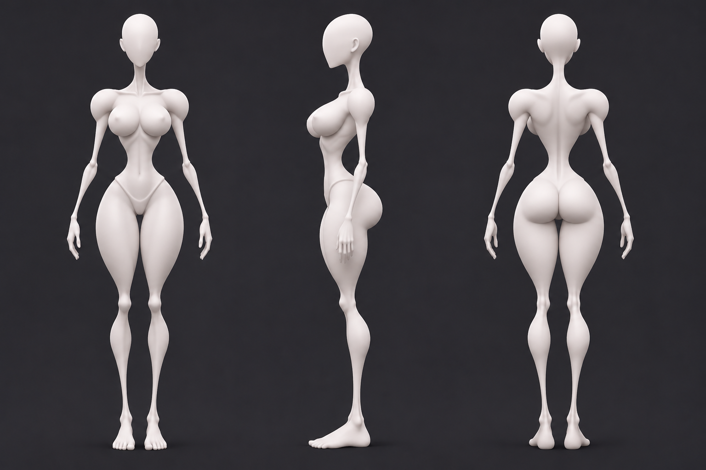
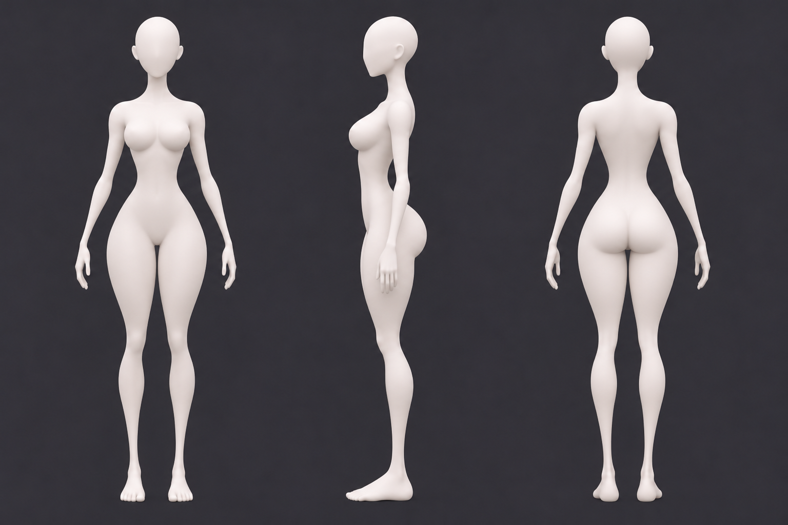
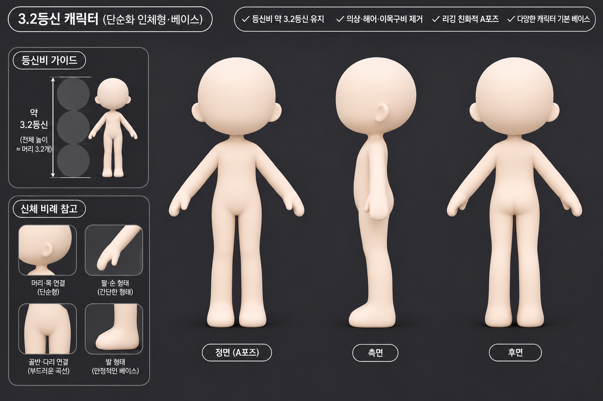
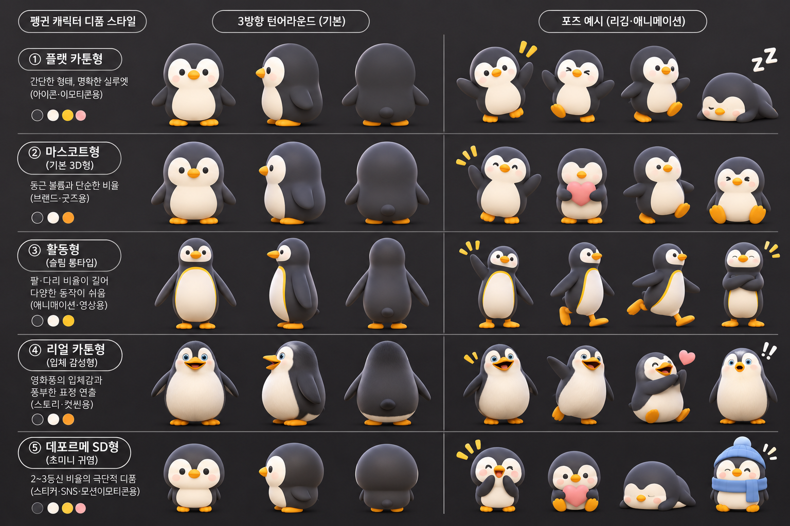
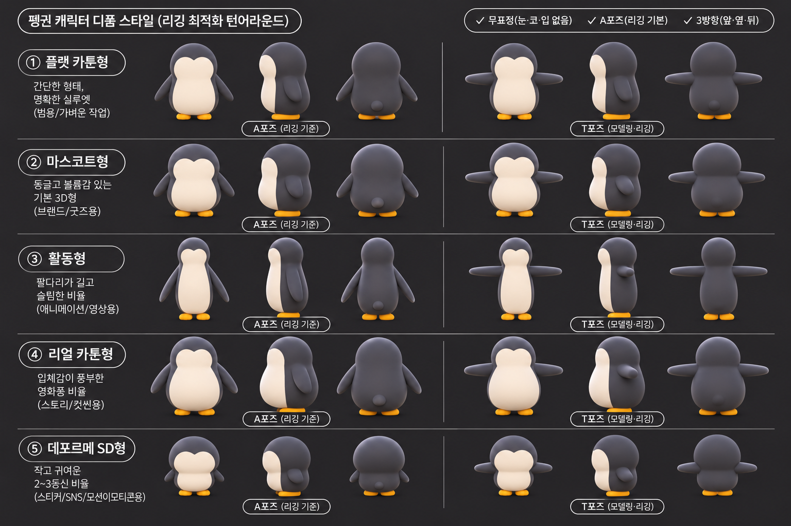

큰 근육과 아주 작은 관절을 과장했습니다. 배 근육과 뼈 경계 등 작은 표현이 많이 남아 있습니다.
파일에 남은 저장 시각: 2026-11-04T08:49:06.226321+00:00. 실제 작업 완료 시각과는 다를 수 있습니다.
초기에 어떤 그림을 원했고 무엇이 달랐는지 아홉 가지 사례로 살펴봅니다. 공개된 그림과 대화의 시기가 비슷해도 정확히 한 번의 수정 전후라고 단정하지 않습니다. 이 페이지는 당시 시도를 설명하며 현재 완료 상태를 대신하지 않습니다.
작가는 처음 결과의 근육 표현이 너무 많다고 했습니다. 뒤에 저장된 그림은 복근 구분이 줄고 허벅지·종아리가 매끈해졌습니다.
아직 모르는 점: 파일 시각과 모습은 요청과 맞아 보이지만, 정확한 대화 첨부 연결이나 같은 3D 모형을 고친 결과인지는 확인되지 않았습니다.
큰 근육과 아주 작은 관절을 과장했습니다. 배 근육과 뼈 경계 등 작은 표현이 많이 남아 있습니다.
파일에 남은 저장 시각: 2026-11-04T08:49:06.226321+00:00. 실제 작업 완료 시각과는 다를 수 있습니다.

075번보다 배 근육의 구분선을 줄였습니다. 허벅지와 종아리를 매끈한 큰 덩어리로 나타냈습니다.
파일에 남은 저장 시각: 2026-11-04T08:51:41.676807+00:00. 실제 작업 완료 시각과는 다를 수 있습니다.
관절을 가늘게 해 달라고 하자 뼈가 너무 강하게 드러났습니다. 작가는 근육과 뼈가 튀어나오지 않도록 단순하게 바꾸자고 했습니다.
아직 모르는 점: 뒤에 저장된 그림이 더 매끈해 보입니다. 정확한 수정 전후 연결과 실제 3D 구조는 확인하지 못했습니다.

관절은 가늘고 쇄골·골반·무릎이 강하게 드러납니다. 파일 이름은 네 방향처럼 적혔지만 큰 그림은 세 방향입니다.
파일에 남은 저장 시각: 2026-11-04T08:54:44.336127+00:00. 실제 작업 완료 시각과는 다를 수 있습니다.

079번보다 근육과 뼈의 돌출을 줄였습니다. 가는 허리와 관절 등 체형 차이는 남아 있습니다.
파일에 남은 저장 시각: 2026-11-04T08:57:02.521472+00:00. 실제 작업 완료 시각과는 다를 수 있습니다.
강아지의 몸 형태에 집중하려고 눈·코·무늬를 지워 달라고 했습니다. 뒤 그림에서는 색과 얼굴 표현이 줄었습니다.
아직 모르는 점: 그림을 바꾸었다고 참고 원자료의 권리 문제가 자동으로 해결되는 것은 아닙니다. 원 대화와 직접 연결된 파일인지는 미확인입니다.

강아지 세 유형을 세 방향에서 보여줍니다. 눈·코·흰 무늬·갈색 귀가 남아 있고, 두 발형의 팔은 몸 가까이에 있습니다.
파일에 남은 저장 시각: 2026-11-04T09:09:42.620913+00:00. 실제 작업 완료 시각과는 다를 수 있습니다.

강아지의 눈·코·무늬를 뺀 모습입니다. 팔과 귀는 여전히 몸과 머리 가까이에 있습니다.
파일에 남은 저장 시각: 2026-11-04T09:10:53.926704+00:00. 실제 작업 완료 시각과는 다를 수 있습니다.
작가는 3D로 만들 때 귀와 머리, 팔과 몸이 붙을까 걱정했습니다. 팔과 귀를 벌린 자세를 요청했습니다.
아직 모르는 점: 비교 자료 img-010은 출처 확인이 필요해 공개하지 않았습니다. 실제 모형의 분리와 움직임 성공 여부도 확인하지 못했습니다.
강아지의 눈·코·무늬를 뺀 모습입니다. 팔과 귀는 여전히 몸과 머리 가까이에 있습니다.
파일에 남은 저장 시각: 2026-11-04T09:10:53.926704+00:00. 실제 작업 완료 시각과는 다를 수 있습니다.
3.2등신을 유지하며 단순하게 만들려 했는데 작가는 몸이 너무 짧아졌다고 지적했습니다. 몸을 늘리고 머리를 줄이는 요청을 이어갔습니다.
아직 모르는 점: 그림 속 비율 표시를 실제로 잰 값으로 보지 않습니다. 요청한 길이로 정확히 고쳤다는 확인도 아닙니다.

큰 둥근 머리와 짧은 몸을 앞·옆·뒤에서 보여줍니다. 팔은 몸통에서 벌렸습니다. 그림에 적힌 3.2등신 비율은 따로 재어 확인하지 않았습니다.
파일에 남은 저장 시각: 2026-11-04T09:36:11.804461+00:00. 실제 작업 완료 시각과는 다를 수 있습니다.

007번보다 팔다리가 길고 가늘어졌습니다. 그림의 3.2등신 표시가 정확한지는 따로 재지 않았습니다.
파일에 남은 저장 시각: 2026-11-04T09:37:12.127321+00:00. 실제 작업 완료 시각과는 다를 수 있습니다.
작가는 몸 형태만 필요했지만 옷과 신발이 남은 결과가 있었습니다. 다음 요청에서는 제거할 대상을 더 자세히 적었습니다.
아직 모르는 점: 비교 자료 img-099·098은 참고 원자료 권리가 불명확해 공개를 보류했습니다. 아래 그림은 비교용이며, 바로 그 요청의 수정본이라고 확정하지 않습니다.

옷과 신발을 빼고 몸 형태만 남긴 세 방향 그림입니다. 옷을 지워 달라는 요청 뒤에 저장되었지만 그 요청에 직접 답한 파일인지는 확인되지 않았습니다.
파일에 남은 저장 시각: 2026-11-04T09:39:04.641467+00:00. 실제 작업 완료 시각과는 다를 수 있습니다.
눈·코·입·무늬를 빼고 팔을 벌린 자세로 바꾸려 했습니다. 뒤 그림에는 얼굴과 자세 변화가 있지만 몸의 색과 노란 발은 남았습니다.
아직 모르는 점: 일부가 바뀐 사례이지 모든 요구를 끝낸 사례는 아닙니다. 원 대화 첨부와의 연결도 미확인입니다.

펭귄의 여러 체형·표정·동작입니다. 눈·부리·몸의 색과 무늬가 보입니다.
파일에 남은 저장 시각: 2026-11-04T09:27:28.385186+00:00. 실제 작업 완료 시각과는 다를 수 있습니다.

펭귄의 눈과 코를 빼고 A자·T자 자세를 표시했습니다. 몸의 검정·크림색 무늬와 노란 발은 남았습니다.
파일에 남은 저장 시각: 2026-11-04T09:29:02.391292+00:00. 실제 작업 완료 시각과는 다를 수 있습니다.
체형표, 마스코트, 강아지, 진돗개, 토끼에서 이름과 저장 시각은 다른데 그림 픽셀이 같은 파일들이 발견됐습니다.
아직 모르는 점: 같은 그림이라는 점은 확인했지만 왜 중복 저장됐는지는 알 수 없습니다. 중복 쌍은 011/012, 013/014/015, 071/072, 080/081, 102/103입니다. 공개하지 않은 번호의 원본도 따로 보관합니다.
캐릭터 그림을 모은 화면과 FBX 내보내기 화면이 남아 있습니다. 자료를 정리하고 Blender로 옮길 준비를 했다는 흔적입니다.
아직 모르는 점: 계정과 작업 정보가 보일 수 있어 화면 img-059·060은 공개하지 않았습니다. 설정 화면만으로 내보내기 완료, Blender 가져오기 성공, 학습 성공을 증명할 수는 없습니다.